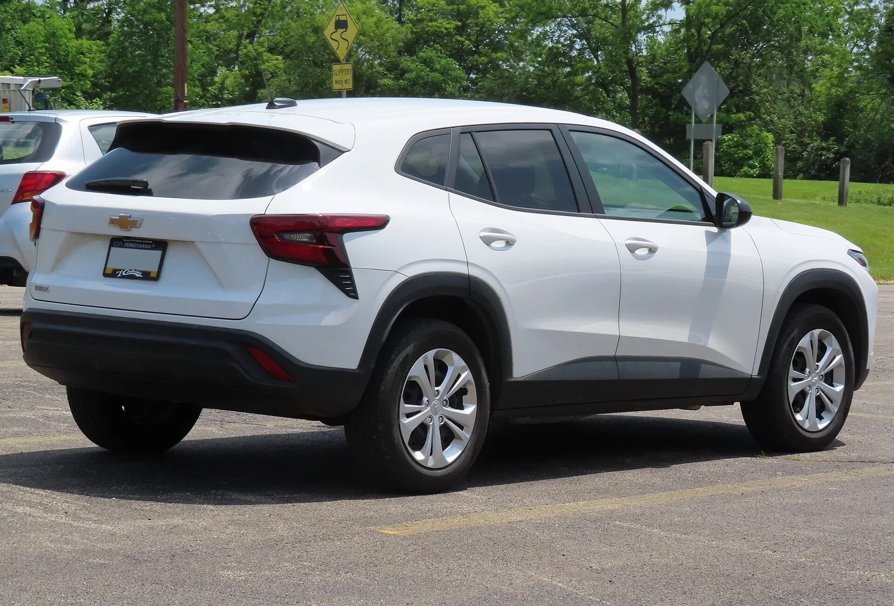
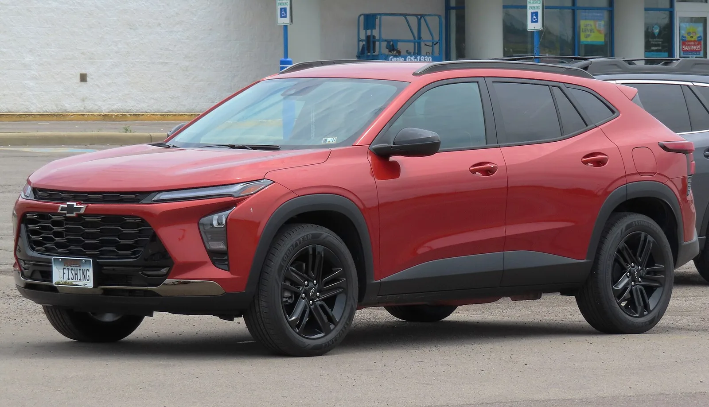

▲ 트랙스 크로스오버. 엔트리 트림이 2,199만 원이다 ⓒ Wikimedia Commons
트랙스 크로스오버의 엔트리 트림은 2,199만 원입니다. 개별소비세 5.0% 기준입니다.
국내에서 이 가격대에 살 수 있는 SUV는 많지 않습니다. 경차를 제외하면 선택지가 좁습니다.
이번에는 이 값에 후방 주차 보조를 새로 넣었습니다.
1. 2,199만 원이라는 자리
| 항목 | 금액 |
|---|---|
| LS DELUXE (엔트리) | 2,199만 원 |
| ACTIV 블랙 루프 옵션 | +15만 원 |
주의할 것은 "개별소비세 5.0% 기준"이라는 단서입니다.
2026년 7월 1일부터 개별소비세가 3.5%에서 5%로 환원됐습니다. 즉 이 가격은 환원된 세율이 반영된 값입니다. 인하 시기의 가격표와 비교하면 그만큼 올라간 것처럼 보일 수 있습니다.
| 항목 | 내용 |
|---|---|
| 취득세 | 차량가의 7% (경차 4%) |
| 공채 매입 | 서울 기준 차량가의 2~3% — 즉시 매도 시 실부담은 매입액의 5~10% |
| 등록비 | 약 15~25만 원 |
| 탁송료 | 별도 |
2,199만 원짜리 차라도 실제 출고까지는 2,400만 원 안팎이 듭니다. 표시가만 보고 예산을 잡으면 어긋납니다.
2. 엔트리에 무엇을 넣었나
| 항목 | 의미 |
|---|---|
| 후방 주차 보조 시스템 | 신규 적용 — 초보 운전자에게 실질적 |
| 무선 폰 프로젝션 | 케이블 없이 안드로이드 오토·애플 카플레이 |
| 플랫 플로어 | 2열 바닥 턱이 없다 — 가운데 좌석 거주성 |
| 파워 리프트게이트 | 버튼으로 트렁크 개폐 |
세 번째 항목이 이 가격대에서 흔치 않습니다. 플랫 플로어는 전륜구동 전용 설계일 때 가능합니다. 사륜을 넣으려면 뒤로 가는 구동축이 바닥을 지나야 하기 때문입니다.
즉 사륜을 포기한 대가로 얻은 공간입니다. 도심 위주 사용이라면 합리적인 교환입니다.
무선 폰 프로젝션도 엔트리 트림에서는 드뭅니다. 유선만 지원하는 차가 여전히 많습니다.

▲ 플랫 플로어는 전륜구동 전용 설계라 가능한 구성이다
3. 왜 박재범인가
| 항목 | 내용 |
|---|---|
| 출연 | 다영, 박재범 |
| 형식 | 디지털 콘텐츠 |
| 공개 | 8월 28일 |
| 사전 이벤트 | 인스타그램 댓글 — 5명에게 콘서트 티켓 2매씩 |
| 이력 | 박재범은 과거 트레일블레이저 광고에도 출연 |
같은 인물을 다른 모델에 다시 쓰는 것은 의도적입니다. 브랜드와 인물 사이의 연결을 누적시키는 방식입니다.
다만 이 캠페인의 성격을 짚을 필요가 있습니다. 디지털 콘텐츠와 인스타그램 이벤트는 인지도 확보를 위한 것이지 구매 전환을 직접 노린 것이 아닙니다.
2,199만 원짜리 엔트리 SUV의 구매층과 콘서트 티켓 이벤트 참여층이 겹치는지가 관건입니다. 겹친다면 효율적이고, 아니라면 노출만 남습니다.
4. 트랙스가 놓인 자리
국내 소형 SUV 시장은 붐빕니다.
| 구분 | 모델 |
|---|---|
| 현대 | 코나, 베뉴 |
| 기아 | 셀토스, 니로 |
| KGM | 티볼리, 액티언 |
| 쉐보레 | 트랙스 크로스오버, 트레일블레이저 |
트랙스의 차별점은 가격과 크기입니다. 소형 SUV로 분류되지만 실제로는 준중형에 가까운 전장을 갖고 있습니다.
그래서 "작은 차 값에 큰 차"라는 포지션이 성립합니다. 대신 사륜구동이 없고 파워트레인 선택지가 제한적입니다.

▲ ACTIV 트림은 블랙 루프 옵션을 15만 원에 고를 수 있다
5. 계약 전에 확인할 것
| 항목 | 이유 |
|---|---|
| 주행보조 사양 | 후방 주차 보조 외에 차로 유지·전방 충돌 방지가 기본인지 |
| 실구매가 | 취득세·공채·등록비 포함 약 20~30% 추가 |
| 개별소비세 | 5.0% 환원분이 반영된 가격인지 |
| 파워트레인 | 사륜구동 선택지가 없다 |
| 프로모션 | 월별 할인 조건이 표시가보다 크게 작용할 수 있다 |
첫 번째 항목이 가장 중요합니다. 엔트리 트림에서는 주행보조 사양이 상위 트림과 크게 갈리는 경우가 많습니다. 후방 주차 보조가 새로 들어갔다는 것은 반대로 그 전까지는 없었다는 뜻이기도 합니다.

▲ 박재범은 과거 트레일블레이저 광고에도 출연한 바 있다
6. 정리
쉐보레 트랙스 크로스오버의 엔트리 트림 LS DELUXE가 2,199만 원(개별소비세 5.0% 기준)입니다. ACTIV 트림의 블랙 루프 옵션은 15만 원입니다.
후방 주차 보조 시스템이 새로 적용됐고 무선 폰 프로젝션, 플랫 플로어, 파워 리프트게이트가 들어갑니다.
마케팅으로는 다영·박재범과 협업한 AFTER FLIRTY를 8월 28일 공개하며, 사전 인스타그램 이벤트로 5명에게 콘서트 티켓 2매씩을 증정합니다. 표시가 외에 취득세·공채·등록비로 약 20~30%가 추가된다는 점은 함께 계산해야 합니다.